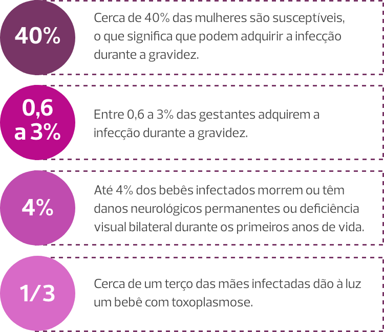
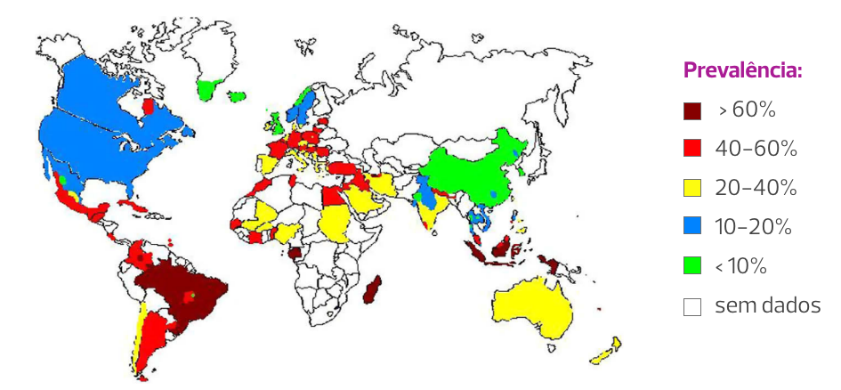
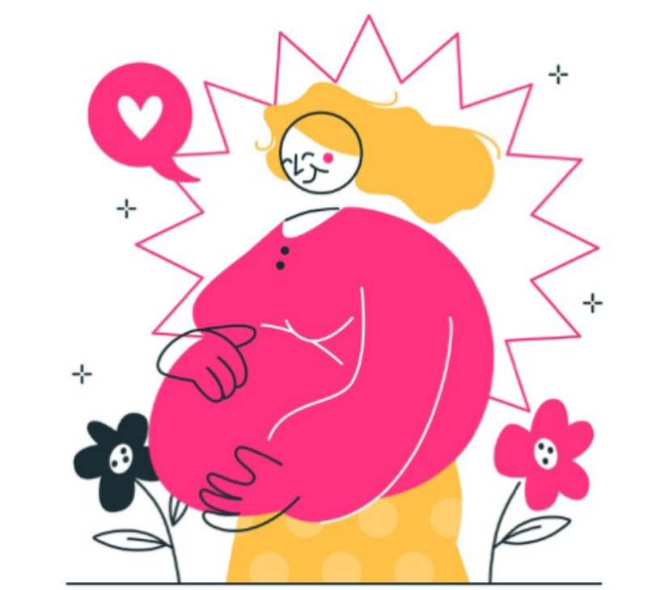

Aula 3
Distocia do ombro
Introdução
A incidência progressiva de obesidade e diabetes, fatores de risco para macrossomia e aumento do peso ao nascimento, determinaram o aumento contemporâneo da distocia de ombro (DO). O evento ocorre em 0,2 a 3,0% dos partos e as variações se relacionam tanto com a subjetividade do seu diagnóstico quanto com a prevalência de macrossomia e diabetes nas populações. Estima-se que um recém-nascido com encefalopatia isquêmica hipóxica secundária à DO ocorre a cada 22.000 partos vaginais a termo.
A DO é considerada uma emergência obstétrica que ocorre devido à impactação do ombro fetal anterior atrás da sínfise púbica materna, após a exteriorização do polo cefálico. A impactação simultânea do ombro fetal posterior no promontório sacral pode agravar ainda mais a distocia.
A DO é uma questão que demanda bastante atenção para ser identificada e tratada, uma vez que a maioria dos casos ocorre com a ausência de fatores de risco pré-natais ou intraparto, ou seja, esse tipo de evento é frequentemente imprevisível e não prevenível. Portanto, os profissionais envolvidos em Pré-natal de Qualidade devem estar preparados para reconhecer o evento e imediatamente executar uma sequência de manobras tocúrgicas adicionais à suave tração descendente, exercida para desprendimento dos ombros fetais (manobra cabeça-ombro) que permitam a resolução da DO em tempo hábil.
Manobra cabeça-ombro

O principal objetivo do tratamento da DO é prevenir asfixia fetal e paralisia braquial permanente ou morte. Outras lesões neonatais (fraturas) e as lacerações do trajeto também devem ser evitadas. Para isso, a atuação organizada da equipe e o sequenciamento rápido e hábil das manobras de delivramento são imprescindíveis.
Fisiopatologia da DO
A DO ocorre por falha da rotação normal dos ombros para o diâmetro oblíquo, no momento da entrada do diâmetro biparietal na pelve. Sendo assim, os ombros anterior e posterior permanecem no diâmetro anteroposterior da pelve materna durante a descida e/ou descem simultaneamente, alterando o processo fisiológico em que o ombro posterior, em um diâmetro oblíquo, desce na frente do ombro anterior.
É marcante a subjetividade do diagnóstico e da gravidade da DO. O evento fica mais evidente diante da falha da manobra cabeça-ombro e/ou da retração da cabeça fetal para o períneo, determinada pela tração reversa do ombro impactado na entrada da pelve (sinal da tartaruga). Retrospectivamente, a necessidade de múltiplas manobras e a ocorrência de lesões maternas e/ou neonatais evidenciam a gravidade da DO.
Critérios mais objetivos, tais como intervalo superior a 60” entre o desprendimento da cabeça e dos ombros, ainda necessitam de estudos de validação, tanto para o diagnóstico quanto para a previsão de resultados neonatais adversos.
Fatores de risco para DO
Apesar de a recorrência da DO ser subestimada pelas escolhas subsequentes por cesárea eletiva, seu risco é de pelo menos 10%, podendo alcançar 25%. Portanto, são vários os fatores de risco para DO, tanto anteparto quanto intraparto, e reconhecê-los permite discutir a possibilidade de cesáreas eletivas e/ou determinar uma vigilância individualizada e atenta do período pélvico. Veja a seguir os fatores de risco anteparto e intraparto.
> Fatores de risco anteparto
Os principais fatores de risco anteparto são:
- Macrossomia fetal.
- Diabetes mellitus.
- História pregressa de DO.
- Gestação pós-termo.
- Sexo fetal masculino.
-
Obesidade materna/ganho excessivo de peso gestacional e idade materna.
Dentre esses fatores, o principal é a macrossomia fetal, sendo que obesidade materna, diabetes e idade materna avançada também se relacionam ao alto peso ao nascer. Entretanto, apesar da DO aumentar progressivamente nos nascimentos de fetos com mais de 4 kg e a morbimortalidade neonatal devido à DO também aumentar significativamente entre os recém-natos pesando mais de 4,5 kg, o peso fetal não possui bom valor de predição para DO.
Veja agora maiores detalhes sobre alguns de seus fatores de risco:
Macrossomia
fetal
A ocorrência concomitante de macrossomia fetal é frequente, mas a maioria dos fetos macrossômicos não evoluem com DO. Aproximadamente metade das DO ocorrem em recém-natos com peso ao nascer inferior a 4 kg, e tanto a ultrassonografia quanto a avalia-ção clínica (manobras de Leopold, regra de Jonhson) possuem baixa sensibilidade para estimar o peso ao nascer.
Diabetes
mellitus
Com relação ao diabetes mellitus, além de sua associação com macrossomia fetal, as medidas antropométricas dos fetos de mães diabéticas favorecem a ocorrência de DO. Fetos de mães diabéticas com mau controle glicêmico, além de grandes são desproporcionais devido ao depósito centrípeto de gordura corporal. Sendo assim, suas relações tórax-cabeça e ombro-cabeça se encontram aumentadas, elevando-se o risco para DO, mesmo naqueles com peso inferior a 4 kg.
Gestação pós-termo
e sexo fetal
O ganho de peso ao nascer secundário ao avanço da gestação explica o risco de DO inerente às gestações pós-termo. O sexo masculino como fator de risco para DO parece ser explicado pelas medidas antropométricas e maior prevalência de macrossomia entre os homens.
Outros fatores
de risco
Outros fatores de risco favorecedores à macrossomia e ao diabetes, e consequentemente à DO, são obesidade e ganho excessivo de peso materno. A demografia materna contemporânea, com maior prevalência de gestantes em idade acima de 35 anos, configura risco para DO, associado a maior prevalência de diabetes, excesso de peso e multiparidade entre essas pacientes.
> Fatores de risco intraparto
No intraparto, os principais fatores de risco são as distocias nos períodos funcionais do parto (dilatação e pélvico) e o parto vaginal operatório. Isoladamente, as anormalidades do período pélvico (período pélvico prolongado e parada secundária da dilatação) não são preditores úteis de DO. Porém, quando combinadas a peso fetal estimado maior do que 4 kg e a parto vaginal operatório se associam ao aumento da incidência de DO.
Clique aqui e saiba mais sobre como o parto vaginal operatório se relaciona a DO.
Apesar da diversidade de fatores de risco para DO, poucos deles são modificáveis. O controle do peso corporal antes e na vigência da gestação, e o controle dos níveis glicêmicos entre as diabéticas são as principais estratégias passíveis de reduzir o risco. Portanto, as intervenções na dieta e no estilo de vida podem reduzir os índices de fetos macrossômicos e de DO, principalmente entre gestantes diabéticas. A seguir abordaremos com maiores detalhes a questão da prevenção da DO.
Prevenção da DO
Como já informamos nesta aula, eventos de DO são imprevisíveis, uma vez que essa emergência obstétrica ocorre predominantemente em parturientes com dimensões pélvicas normais. Portanto, os exames de imagem e a pelvimetria clínica não são úteis para identificar mulheres com risco aumentado, exceto nos casos raros de anormalidades pélvicas ou fetais graves.
A biometria fetal levemente anormal não é preditiva de DO. Os diversos parâmetros biométricos fetais (diferença entre os diâmetros abdominal e biparietal, circunferência torácica, razão circunferência cefálica/circunferência abdominal, razão comprimento femoral/circunferência abdominal, distância úmero espinhal, diâmetro bochecha a bochecha, largura do ombro) ou não foram testados em grandes estudos prospectivos ou não provaram ser úteis para a predição da DO.
Apesar do consenso de que a cesárea planejada para fetos macrossômicos é apropriada para reduzir a DO, essa conduta não tem se provado vantajosa, pois a maioria dos casos de DO e de lesão de plexo braquial não podem ser previstos ou evitados, acarretando elevação injustificada das taxas de cesariana. Entretanto, para fetos de mães diabéticas com peso estimado acima de 4,5 kg, assim como para aqueles com mais de 5 kg na ausência de diabetes, avaliados dentro de uma semana do parto, a cesárea parece ser capaz de reduzir a DO e a morbidade associada.
O princípio da cesárea para prevenir DO também se aplica diante do prolongamento do segundo estágio do trabalho de parto (primíparas com analgesia: quatro horas; primíparas sem analgesia: três horas; multíparas com analgesia: três horas; multíparas sem analgesia: duas horas) em parturientes diabéticas com estimativa de peso fetal entre 4 e 4,5 kg, assim como em parturientes não diabéticas com peso fetal estimado entre 4,5 e 5 kg. Entretanto, o parto vaginal operatório nessas situações pode ser considerado diante da presença de operadores experientes, da avaliação individualizada da posição e tamanho fetais, da história dos partos anteriores e dos hábitos maternos.
A indução do parto dos fetos macrossômicos como medida de prevenção da DO, também é uma conduta limitada devido à baixa precisão dos métodos de estimativa do peso fetal, pela relação desfavorável entre o número de induções necessárias para prevenir os resultados adversos, pelas consequências maternas e neonatais relacionadas ao processo de indução e pela falta de evidências científicas da eficácia dessa conduta.
Esse recurso pode ser oferecido às gestantes sem diabetes, com 39 semanas e peso fetal estimado entre 4 e 5 kg, mas a conduta expectante é alternativa razoável. Já a indução com 37 ou 38 semanas nessa situação é desaconselhada, uma vez que, apesar de potencialmente promover maior redução na DO, há possibilidade de aumento das morbidades neonatais comuns (hiperbilirrubinemia, problemas respiratórios).
Para mulheres com diabetes pré-gestacional, a definição do momento do parto deve ser baseada nos riscos maternos e nos demais riscos perinatais associados à doença, com pouco benefício na manutenção da gestação além de 39 semanas e necessidade de interrupção prematura diante de vasculopatia e/ou mau controle glicêmico.
Entre mulheres com diabetes gestacional e peso fetal estimado entre 4 e 5 kg, a indução do parto realizada com 39 semanas reduz potencialmente a DO, com riscos maternos e demais riscos neonatais (dificuldade respiratória, terapia intensiva) em menor incidência. Nesse caso, devem ser avaliados peso fetal, controle glicêmico ao longo da gestação, peso ao nascer e resultados dos partos anteriores, e características físicas da parturiente (estatura, peso, índice de massa corpórea, pelvimetria).
É importante considerar também duas outras questões quando pensamos em prevenção de DO:
- A indução do parto na 41ª semana de gestação reduz o nascimento de recém-natos com mais de 4 kg, com potencial redução da DO.
- Em pacientes com história de DO prévia, principalmente com lesão neonatal grave, o risco potencial de recorrência (10% ou mais) e os fatores de risco da gestação atual (peso fetal estimado, glicemia) devem ser considerados na tomada de decisão da via de parto.
Manejo inicial da DO
O manejo da DO tem o objetivo de completar o desprendimento fetal com segurança, antes da asfixia e lesão cortical decorrentes da compressão do cordão umbilical e do impedimento da inspiração, evitando lesões neurológicas periféricas ou outros traumas fetais e/ou maternos. O tempo limite que antecede o aumento do risco de lesão por asfixia é de cinco minutos, o que impõe a necessidade instantânea de organização e atuação efetiva da equipe.
Imediatamente após a suspeita de DO, a parturiente e seu acompanhante devem ser comunicados e as seguintes ações devem ser implementadas: solicitação de ajuda aos demais profissionais (enfermagem assistencial e obstétrica, obstetras, pediatras e anestesistas); documentação do momento do diagnóstico e cronometragem da assistência; orientação contrária aos puxos voluntários. Do mesmo modo, as seguintes condutas são imprescindíveis:
As evidências sobre a eficácia e o sequenciamento das diversas manobras são escassas. Portanto, não existe definição de qual manobra é superior a outra e nem qual é a sequência de manobras ideal. As manobras tentam resolver a DO por meio de três mecanismos:
- Ampliação das dimensões pélvicas maternas.
- Redução do diâmetro biacromial fetal por meio da adução dos ombros ou da remoção do braço posterior.
- Modificação na relação entre o diâmetro biacromial do feto e a pelve óssea materna, girando o tronco fetal para o diâmetro oblíquo da pelve (mais amplo) e descompactando o ombro anterior por trás da sínfise púbica ou liberando o braço e/ou ombro posteriores.
Manejo inicial da DO
Em litotomia, a parturiente deve ser posicionada com as nádegas rente à borda da cama ou maca de parto. A tração para liberação dos ombros deve ser axial e alinhada com a coluna cervicotorácica fetal, em um componente descendente ao longo de um vetor que não ultrapasse 45° abaixo do plano horizontal da parturiente. A falha da manobra cabeça-ombro, efetuada com força habitual, é indicativa de DO. Portanto, a percepção de força excessiva para liberação dos ombros é indicativa da necessidade de manobras específicas.
Sugere-se que a primeira manobra específica a ser aplicada seja a de McRoberts, que pode ser associada à manobra de Rubin I. Essas manobras são eficientes e menos invasivas. Vale destacar que, em pacientes com obesidade, esse passo pode ser omitido.
Na manobra de McRoberts, os membros inferiores são flexionados contra o abdome (hiperflexão das pernas e das coxas), devendo ser previamente removidos quando acomodados em perneiras. Essa posição promove o alinhamento vertical da pelve materna, com rotação cefálica da pube, redução da lordose lombar, retificação do promontório, giro da sínfise púbica sobre o ombro impactado, flexão da coluna fetal e queda do ombro posterior na concavidade do sacro. Além disso, ocorre aumento e redirecionamento da força expulsiva, que se torna perpendicular ao plano de saída.
A manobra de Rubin I, executada simultaneamente à de McRoberts, otimiza a liberação do ombro por meio de sua adução. A manobra é realizada por um auxiliar que, posicionado do lado do dorso fetal, realiza uma compressão suprapúbica em direção ínfero-medial. A compressão deve ser realizada com as mãos espalmadas, posicionadas semelhante à massagem cardíaca. Sob o comando do obstetra que efetua a tração inferior na cabeça fetal, a manobra de Rubin I deve ser iniciada imediatamente antes da manobra cabeça-ombro. Assim que se inicia a compressão suprapúbica, a cabeça é tracionada inferiormente, promovendo a liberação do ombro.
Manobras de McRoberts e Rubin I
Diante de falha das manobras de McRoberts e Rubin I, o sequenciamento das manobras deve progredir para o desprendimento completo do braço posterior ou para a liberação do ombro posterior. Embora mais invasiva, a manobra para o desprendimento completo do braço posterior (manobra de Jacquemier) apresenta alta taxa de sucesso na resolução da DO.
Para realizar essa manobra, o obstetra deve apreender o braço posterior adiante do tórax fetal. Portanto, se o dorso fetal estiver voltado para o lado materno direito, a mão direita do operador deverá executar a manobra pelo lado esquerdo da pelve materna, e vice-versa. A manobra é executada em três tempos e uma episiotomia pode ser necessária para facilitar o procedimento.
Primeiramente, a mão é introduzida na vagina, progride através do vazio sacral e apreende o braço posterior, com os dedos posicionados paralelamente ao úmero.

Em um segundo tempo, o braço é deslocado adiante do tórax fetal. Se o braço fetal estiver estendido, é necessário executar uma pressão na fossa antecubital para otimizar o deslocamento.

Em um segundo tempo, o braço é deslocado adiante do tórax fetal. Se o braço fetal estiver estendido, é necessário executar uma pressão na fossa antecubital para otimizar o deslocamento.

Diante da dificuldade para apreensão e deslocamento anterior do braço posterior (braço estendido ou posicionado atrás do dorso fetal), a manobra de Shrug é uma alternativa eficiente à manobra de Jacquemier. Nessa manobra, a mão do operador apreende a axila posterior do feto, entrelaçando os dedos polegar e indicador no cavo axilar. A axila é deslocada em direção à cabeça fetal, posicionando-se o ombro posterior em um nível inferior ao da sínfise púbica. Simultaneamente, a outra mão segura a cabeça do feto. A cabeça e o ombro são girados juntos em 180°, em direção à face fetal, liberando o ombro posterior, anteriormente na pelve. Alocado posteriormente após a rotação do tronco fetal, o ombro anterior é o último a se desprender.
Manobra de Shrug
Diante da falha em remover o braço posterior, imposta pela dificuldade de alcançar o cotovelo ou o antebraço, uma outra estratégia é executar uma tração axilar para descida ou liberação do ombro posterior (manobra de Menticoglou). A manobra é realizada por meio do entrelaçamento dos dedos médios de cada mão do operador na axila posterior do feto. Enquanto um auxiliar flexiona a cabeça fetal em direção ao ombro anterior impactado, o operador introduz o dedo médio de sua mão esquerda no lado direito da pelve materna e o dedo médio direito no lado contralateral. Os dedos são entrelaçados no cavo axilar fetal e uma tração inferior é executada ao longo da curvatura sacral. Essa manobra também facilita uma nova tentativa de remoção completa do braço posterior ou a execução subsequente de uma manobra rotatória interna para desprendimento do ombro anterior impactado. Frequentemente, essa manobra também promove a liberação espontânea do ombro anterior.
Manobra de Menticoglou
Uma abordagem alternativa para o desprendimento do ombro posterior é realizar a apreensão da axila e tração inferior do ombro com mão única. Nessa situação, o dedo indicador irá envolver a axila pelo dorso fetal e o polegar deslizará anteriormente ao ombro. As pontas dos dedos devem tocar entre si no cavo axilar fetal. Subsequentemente, a tração inferior é executada.
Diante da falha na abordagem inicial, manobras secundárias devem ser instituídas. As principais são a manobra de Gaskin, que você viu na primeira aula deste módulo, e as manobras rotatórias internas (Rubin II, parafuso de Woods e Woods reversa).
As manobras rotatórias internas devem ser aplicadas em sequenciamento. Veja:
Sequenciamento das manobras rotatória internas:
Rubin II
A primeira tentativa deve ser a adução do
ombro anterior impactado por meio da manobra de
Rubin II. A mão do operador a efetuar a manobra
deve ser a do lado correspondente ao do dorso
fetal. A mão deve ser introduzida pelo vazio
sacral homolateral ao do dorso fetal, ser
deslocada superiormente e alocada atrás do ombro
anterior impactado para promover sua adução. O
objetivo é deslocar o ombro para o diâmetro
oblíquo da pelve, de dimensões mais amplas.
Sequenciamento das manobras rotatória internas:
parafuso de Woods
Diante da falha, a mão deve ser mantida
atrás do ombro fetal anterior enquanto a outra mão
é introduzida no vazio sacral contralateral e
alocada adiante do ombro posterior. Assim,
simultaneamente, a mão superior efetua compressão
posterior de adução do ombro impactado e a mão
inferior comprime anteriormente o ombro posterior,
abduzindo-o e otimizando a tentativa de
deslocamento do diâmetro biacromial para o
diâmetro oblíquo da pelve. A manobra efetuada na
frente do ombro posterior é denominada parafuso de
Woods.

Sequenciamento das manobras rotatória internas:
Woods reversa
Caso a segunda tentativa seja frustrada, a mão
inferior do operador é removida do trato genital e
a mão superior é deslocada inferiormente,
alocando-se atrás do ombro posterior para efetuar
a manobra de Woods reversa, que também promove uma
rotação interna do dorso fetal de 180°, invertendo
os ombros fetais para uma posição oblíqua de
desprendimento.
Agora, vamos falar de um método proposto para o treinamento profissional no manejo da DO na posição litotômica: o mnemônico ALEERTA.
Caso a DO não seja resolvida após as tentativas das manobras iniciais e secundárias descritas, a assistência deve progredir para as manobras de última instância (resgate), que você também verá nesta aula.
Manejo da DO nas posições verticais
Como você já viu anteriormente neste curso, o benefício evidente da liberdade de posição e das posições verticais têm contribuído para maior adoção das posições de cócoras, Gaskin e dos bancos de apoio na assistência ao segundo período do trabalho de parto. Nessas situações, a DO pode ser solucionada por meio de outro sequenciamento de manobras, visando evitar perda adicional de tempo.
O mnemônico A SAÍDA é proposto para o treinamento profissional no manejo da DO em parturientes na posição vertical, livres de uma maca ou mesa cirúrgica. Veja:
Caso não ocorra a resolução, a parturiente será mantida em quatro apoios para tentativa subsequente das manobras internas. A sequência sugerida é a mesma da posição de litotomia: manobras de Rubin II, parafuso de Woods e Woods reversa.
A técnica adotada para execução das manobras também será praticamente a mesma. O que muda é que os ombros fetais estão invertidos pela alteração da posição materna, ou seja, o ombro anterior impactado na pube materna está situado inferiormente e o ombro posterior se encontra superiormente. Assim, se compararmos com a posição de litotomia, as manobras são efetuadas nos ombros contrários.
Então, a manobra de Rubin II é realizada atrás no ombro posterior, agora posicionado superiormente; o parafuso de Woods é efetuado adicionando-se pressão com a outra mão adiante do ombro anterior, posicionado inferiormente; e a manobra de Woods reversa é realizada inferiormente, atrás do ombro anterior, após o operador deslocar a mão inferiormente. Diante da falha do sequenciamento das manobras internas, a próxima tentativa é o desprendimento do braço posterior (manobra de Jacquemier), aqui situado superiormente. A mão do operador penetra superiormente pelo vazio sacral, apreende e desloca o braço posterior anteriormente no tórax fetal. Em seguida, o operador desloca sua mão para apreensão da mão fetal, efetuando nesta uma tração inferior, promovendo o giro do corpo fetal e o delivramento ordenado da mão, braço e ombro posteriores.
Caso não ocorra a resolução com esse sequenciamento, a assistência deve progredir para as manobras de última instância (resgate), que você verá mais adiante nesta aula.
Outros sequenciamentos de manobras na DO
Uma abordagem situacional pode ser adotada de acordo com a posição materna no momento da DO e com os movimentos da pelve. No sequenciamento proposto por Harder (2005), antes das manobras internas são executados movimentos para promover uma contranutação do sacro, levantando a articulação lombossacra contra a gravidade e aumentando o diâmetro anteroposterior da pelve posterior. Aliada à movimentação corporal, a contranutação sacral ajuda a resolver a DO. Estando a parturiente em litotomia, as nádegas são deslocadas rente à borda da cama (ou maca) de parto e os membros inferiores são soltos abaixo do nível da pelve, em posição de Crouzat-Walcher, ampliando o estreito superior. Logo em seguida, a parturiente é posicionada em McRoberts. Esse mesmo movimento de contranutação do sacro também é proposto para outras posições adotadas no parto (Sims, joelhos, Gaskin).
O protocolo de Tully (2012) propõe que as manobras sejam iniciadas com a parturiente na posição de Gaskin ou em “largada de corrida”. Realiza-se, então, a manobra de Rubin II, deslocando o diâmetro biacromial do feto para o diâmetro oblíquo da pelve materna e ampliando o espaço para inserção da mão que realizará a remoção do braço posterior.
Manobras de última instância (resgate) na DO
A fratura da clavícula e a extração do ombro posterior com o auxílio de uma tipoia são manobras que podem ser tentadas imediatamente antes das manobras clássicas de última instância (Zavanelli, resgate abdominal e sinfisiotomia). No entanto, não se enquadram no manejo inicial da DO acima descrito, pois são associadas a maior morbidade neonatal.
A clavícula anterior pode ser intencionalmente fraturada, reduzindo o diâmetro biacromial e delivrando o ombro impactado. Na técnica, o operador deve utilizar os dedos para tracionar a clavícula para fora, até que se quebre. O procedimento pode ser tecnicamente difícil e se associar a lesões das estruturas vasculares e pulmonares fetais subjacentes. Entretanto, é um procedimento menos mórbido do que as manobras de última instância.
O ombro posterior pode ser extraído com o auxílio de uma tipoia aplicada na axila posterior. Fratura umeral parece ser a principal morbidade neonatal associada. Uma sonda urinária n° 12 ou 14 (ou um cateter de sucção) é dobrada em alça na extremidade do dedo indicador, que será alocado atrás do ombro posterior. A alça é empurrada por detrás da axila posterior, até ser recuperada pelo outro dedo indicador, que é introduzido no lado contralateral da pelve, anteriormente ao tórax fetal. O laço é subsequentemente desdobrado, formando uma tipoia ao redor do ombro posterior. As extremidades da tipoia são apreendidas e uma tração inferior moderada é executada até a liberação do ombro posterior. A tipoia também pode ser utilizada para promover uma rotação dos ombros em 180°, com o auxílio de uma contrapressão efetuada atrás do ombro anterior.
Extração do ombro posterior

As manobras de última instância (Zavanelli, resgate abdominal e sinfisiotomia) apresentam maior morbidade e seus riscos e benefícios devem ser avaliados considerando-se as condições fetais e as possibilidades locais para realização das intervenções e tratamento das complicações. Realizar o relaxamento muscular (sedação, anestesia geral) e uterino otimiza o sucesso dessas manobras. São recomendadas a terbutalina (0,25 mg; via subcutânea) e a nitroglicerina (50 mcg a cada minuto até obtenção do relaxamento; dose máxima 250 mcg).
A manobra de Zavanelli (Gunn-Zavanelli-O’Leary) reposiciona a cabeça fetal na pelve para uma cesárea subsequente. O passo inicial é a reversão da rotação externa, posicionando anteriormente o occipital. A seguir, a cabeça é fletida e, por meio de uma pressão firme exercida com a palma de uma das mãos, empurrada superiormente na vagina, o mais alto possível. A outra mão pode deprimir o períneo simultaneamente, aliviando a compressão do cordão umbilical e facilitando o reposicionamento vaginal da cabeça.
Manobra de Zavanelli

Já no resgate abdominal, a parturiente é submetida a laparotomia e histerotomia para a rotação manual transabdominal do ombro anterior. Efetuada a rotação do diâmetro biacromial para o diâmetro oblíquo da pelve, a extração fetal é realizada por via vaginal por outro operador.
Por outro lado, apesar de poder salvar vidas, pois a divisão cirúrgica da cartilagem da sínfise púbica amplia a abertura pélvica, desobstruindo o ombro, a sinfisiotomia é uma manobra que deve ser utilizada em caráter de exceção, devido à falta de evidências quanto à sua eficácia e segurança, assim como pelas possíveis morbidades associadas, particularmente instabilidade pélvica.
Apesar de poder solucionar a DO, a sinfisiotomia deve ser realizada apenas diante da falha das demais manobras, e em locais onde não é possível realizar o resgate abdominal por ausência de salas cirúrgicas. A técnica é realizada sob anestesia local, com a parturiente em litotomia e membros inferiores abduzidos. Após sondagem vesical, o anestésico deve ser infiltrado na pele e subcutâneos sobrejacentes à cartilagem púbica. O operador desvia a uretra lateralmente com uma das mãos e realiza uma incisão de 1 a 3 cm com uma lâmina de bisturi. A incisão deve ser suficiente para o afastamento dos ramos púbicos e delivramento do ombro impactado. Portanto, não é necessário incisar a espessura total da cartilagem. Após o procedimento, repouso absoluto está recomendado por dois dias, seguidos de mobilização progressiva. Abdução dos membros inferiores deve ser evitada entre 7 e 10 dias.
Principais complicações maternas e neonatais na DO
As complicações maternas graves mais comuns da DO são hemorragia pós-parto (atonia uterina e lesões do trajeto) e lacerações perineais complicadas. Outras complicações incluem diástase da sínfise púbica, lesões do trato urinário (uretra e bexiga) e neuropatia cutânea femoral lateral transitória, secundária à manobra de McRoberts. As manobras de última instância podem se associar mais à rotura uterina, diástase da sínfise púbica e a lesões do trato urinário.
As lesões neonatais incidem em 5% das DO. Podem ocorrer mesmo quando o tratamento é adequadamente instituído. A continuidade da descida da cabeça fetal simultânea à impactação do ombro promove o estiramento dos nervos do plexo braquial, com potencial agravamento das lesões determinado pelas manobras de delivramento executadas. Adicionalmente, a compressão dos vasos do cordão umbilical e do pescoço fetal e a estimulação vagal excessiva são eventos que resultam em asfixia neonatal. A complicação neonatal mais frequente é a lesão do plexo braquial. O estiramento do plexo braquial é significativamente mais incidente quando três ou mais manobras são realizadas. As lesões nas raízes C5 e C6 ou em C5, C6 e C7 (paralisia de Duchenne-Erb) são de melhor prognóstico e se recuperam dentro de seis meses em mais da metade dos infantes. Já as lesões envolvendo todas as raízes de C5 a T1 se restabelecem em cerca de 14% dos casos.
Apesar de a DO e a força excessiva do operador serem fatores de risco importantes para o estiramento do plexo braquial, essas lesões frequentemente ocorrem na ausência de impactação do ombro, em cesáreas ou associadas a injúrias ocorridas no período pré-natal. Portanto, parece que as forças propulsoras, a posição fetal e os puxos maternos podem ser suficientes para ocasionar tração lesiva do plexo braquial. Outras complicações neonatais graves são as fraturas da clavícula e do úmero, pneumotórax, encefalopatia hipóxico-isquêmica e óbito neonatal. Complicações neonatais mais raras incluem paralisia diafragmática, síndrome de Horner (paralisia óculo-simpática), lesão do nervo facial, fratura espiral do rádio e paralisia do nervo laríngeo.
Principais aspectos na documentação da DO
O registro dos eventos relacionados a DO, com detalhamento da assistência prestada e das complicações, é estritamente recomendado. A documentação adequada do evento é importante para o aconselhamento das pacientes e de seus cuidadores quanto aos riscos futuros, assim como para assuntos legais. O uso de formulários padronizados propicia melhoria documental. A documentação deve citar os membros da equipe que participaram da assistência, assim como o tempo gasto até a chegada de cada um deles na cena do parto. A descrição deve detalhar qual ombro estava impactado e em quais foram realizadas as manobras de delivramento. As manobras devem ser descritas conforme o sequenciamento ocorrido. Deve-se detalhar o tempo gasto em cada manobra, assim como o intervalo de tempo até a resolução.
Também devem ser relatados a perda sanguínea estimada, os detalhes da revisão do canal de parto, o índice de Apgar, o pH de cordão umbilical e a avaliação neonatal.
Fim da aula
A imprevisibilidade e potencial gravidade da DO, assim como a limitação do tempo para sua resolução sem sequelas, fazem desse evento um dos mais desafiadores da urgência em obstetrícia, exigindo dos cuidadores atuação conjunta e organizada, com instituição rápida e hábil de manobras tocúrgicas específicas.
Contemporaneamente, o cenário epidemiológico da DO é marcado pelo aumento de sua incidência, determinado pela alta prevalência de obesidade e diabetes na gestação. Diante desses aspectos, podemos afirmar que todos os profissionais que assistem partos devem estar capacitados para o rápido reconhecimento e resolução dessa ocorrência, objetivando prevenir asfixia e morte neonatal, paralisia braquial permanente e complicações maternas associadas.
Por isso, instituir protocolos e metodologias ativas de ensino são imprescindíveis para propiciar o manejo baseado em evidência científica e o melhor desempenho das equipes assistenciais no enfrentamento desse “pesadelo obstétrico”. O treinamento de habilidades e a simulação propiciam melhorias no uso das manobras, na comunicação entre os membros das equipes e na documentação do evento. O uso de protocolos e de metodologias ativas de ensino promove manejo baseado em evidências científicas e redução das lesões transitórias do plexo braquial.
Agora, vamos revisitar algumas informações importantes deste tema?
- A distocia de ombro é um evento predominantemente imprevisível e não prevenível.
- A incidência progressiva de obesidade e diabetes determinou o aumento contemporâneo da incidência de distocia de ombro.
- Os principais fatores de risco para distocia de ombro são macrossomia fetal, diabetes mellitus, distocias nos períodos funcionais do parto e parto vaginal operatório.
- Os exames de imagem e a pelvimetria clínica não são úteis para identificar mulheres com risco aumentado de distocia de ombro.
- O diagnóstico e a gravidade da distocia de ombro são subjetivos. A falha da manobra cabeça-ombro e o sinal da tartaruga são os principais critérios diagnósticos. A necessidade de múltiplas manobras de delivramento e a ocorrência de lesões maternas e/ou neonatais evidenciam melhor a gravidade dos casos.
- Os profissionais envolvidos na Pré-natal de Qualidade devem estar preparados para reconhecer a distocia de ombro e imediatamente executar uma sequência de manobras que permitam sua correção em tempo hábil.
- O controle do peso corporal e dos níveis glicêmicos são as principais estratégias passíveis de reduzir o risco de distocia de ombro.
- As complicações maternas graves mais comuns da distocia de ombro são hemorragia pós-parto e lacerações perineais complicadas.
- A complicação neonatal usualmente mais frequente da distocia de ombro é a paralisia transitória do plexo braquial.
- O treinamento de habilidades e a simulação propiciam melhorias na assistência e na documentação da distocia de ombro, promovendo o manejo baseado em evidências científicas e reduzindo as lesões transitórias do plexo braquial.
Recomendações
- Em gestações com diabetes e peso fetal estimado acima de 4500 gramas e naquelas sem diabetes e estimativa de peso fetal acima de 5000 gramas, a cesárea parece prevenir distocia de ombro.
- No prolongamento do segundo estágio do trabalho de parto de parturientes diabéticas com estimativa de peso fetal entre 4000 e 4500 gramas, assim como das não diabéticas com peso fetal estimado entre 4500 e 5000 gramas, a cesárea para prevenção de distocia de ombro também se aplica.
- No período pélvico prolongado de fetos com peso estimado acima de 4500 gramas, a cesárea intraparto para prevenção da distocia de ombro é preferível ao parto vaginal operatório baixo ou de alívio. Similarmente, o parto vaginal operatório com a cabeça fetal na pelve média deve ser evitado em fetos com peso estimado acima de 4000 gramas, estando indicada a cesárea intraparto. Nessas situações, a instrumentação do parto deve ser considerada apenas diante da presença de operadores experientes, mediante avaliação individualizada da posição e tamanho fetais, da história dos partos anteriores e dos hábitos maternos.
- A indução do parto para prevenir distocia de ombro é indicada para gestantes com diabetes gestacional, 39 semanas e peso fetal estimado entre 4000 e 4500 gramas. Em gestantes sem diabetes, a indução também pode ser oferecida com 39 semanas diante da estimativa de peso fetal entre 4000 e 5000 gramas, mas a conduta expectante também é alternativa razoável.
- Para o tratamento da distocia de ombro deve-se adotar uma sequência de manobras que pode variar de acordo com a posição da parturiente. Na posição de litotomia, sugere-se que a primeira manobra específica seja a de McRoberts, podendo ser associada à pressão suprapúbica externa (manobra de Rubin I).
- Na posição de litotomia, diante de falha das manobras iniciais, as principais manobras secundárias são as de Gaskin (quatro apoios), a liberação do braço posterior e as rotatórias internas (Rubin II, parafuso de Woods e Woods reversa). A tração axilar para a liberação do ombro posterior também pode ser uma alternativa viável.
- Em posições verticais, o sequenciamento recomendado é aumentar o agachamento (manobra de McRoberts modificada), pressão suprapúbica externa, posição de quatro apoios (Gaskin), manobras internas e desprendimento do braço posterior. A tração axilar do ombro não impactado também pode ser uma alternativa.
- As manobras de resgate para correção da distocia de ombro incluem a tentativa de fratura da clavícula fetal e a extração do ombro posterior com o auxílio de uma tipoia axilar. Em caso de insucesso, as manobras de última instância são a de Zavanelli, o resgate abdominal e a sinfisiotomia. Devido a morbidade materna associada ao procedimento, a sinfisiotomia deve ser precedida de avaliação dos riscos e benefícios e restrita a locais onde não é possível realizar o resgate abdominal por ausência de salas cirúrgicas.
- A documentação da distocia de ombro deve detalhar a assistência prestada, o ombro fetal impactado, o tempo até a resolução e as complicações associadas, sendo importante para o aconselhamento das pacientes e de seus cuidadores, assim como para assuntos legais. É importante estabelecer uma comunicação eficaz com a parturiente e seus acompanhantes durante toda a assistência, detalhando as manobras realizadas, assim como as complicações ocorridas.
-
Instituir protocolos e metodologias ativas de ensino propiciam o manejo baseado em evidência científica e o melhor desempenho das equipes assistenciais no tratamento da distocia de ombro.
Você concluiu esta aula, continue se empenhando nos seus estudos. Siga para a próxima aula!